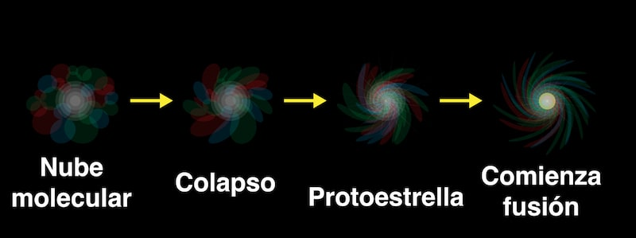
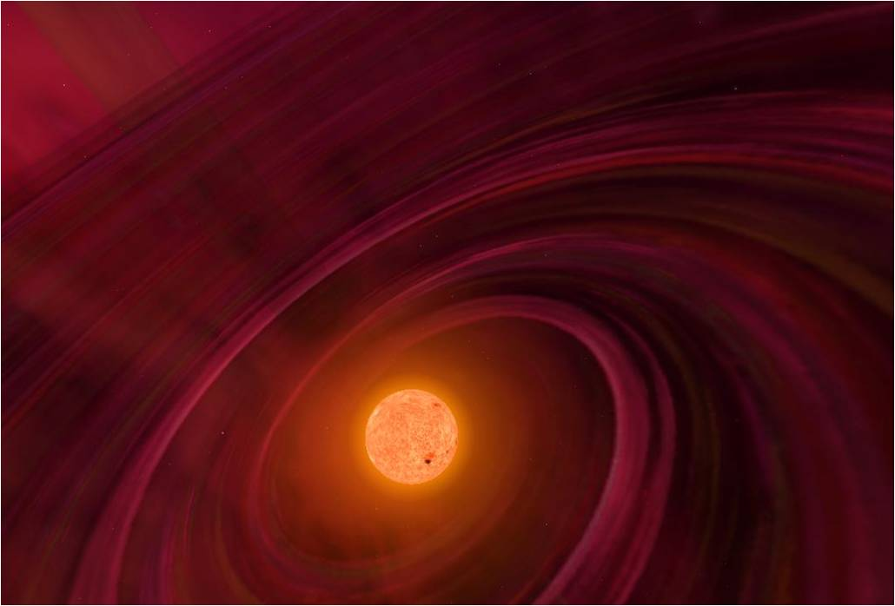
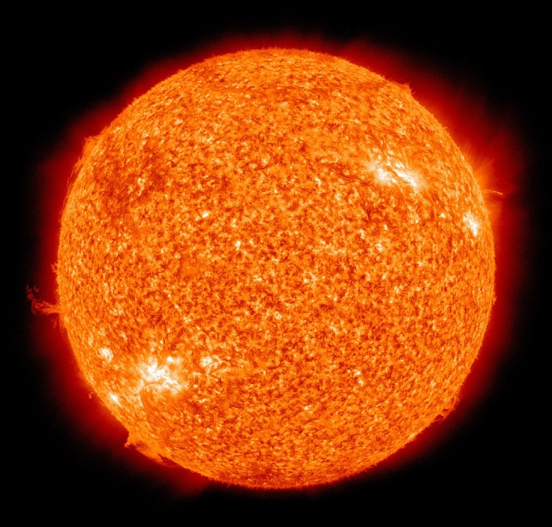
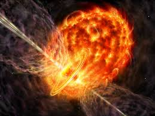

Nebulosa: Es una enorme nube de gas (principalmente hidrógeno) y polvo. La gravedad empieza a juntar este material, formando una protoestrella.
Protoestrella: La nube colapsa y la temperatura aumenta. Aún no se producen reacciones nucleares, pero la estrella empieza a brillar débilmente.
Secuencia Principal: Comienza la fusión nuclear: el hidrógeno se convierte en helio en el núcleo, liberando energía. Esta es la etapa más larga y estable de la vida de una estrella (el Sol está en esta fase). Dura millones o incluso miles de millones de años, dependiendo de la masa.
Final de Vida: Expulsan sus capas exteriores formando una nebulosa planetaria. El núcleo que queda se convierte en una enana blanca, que se enfría lentamente.



